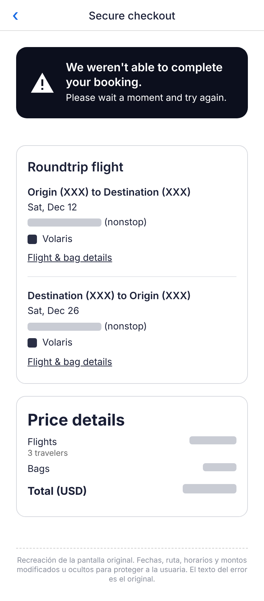
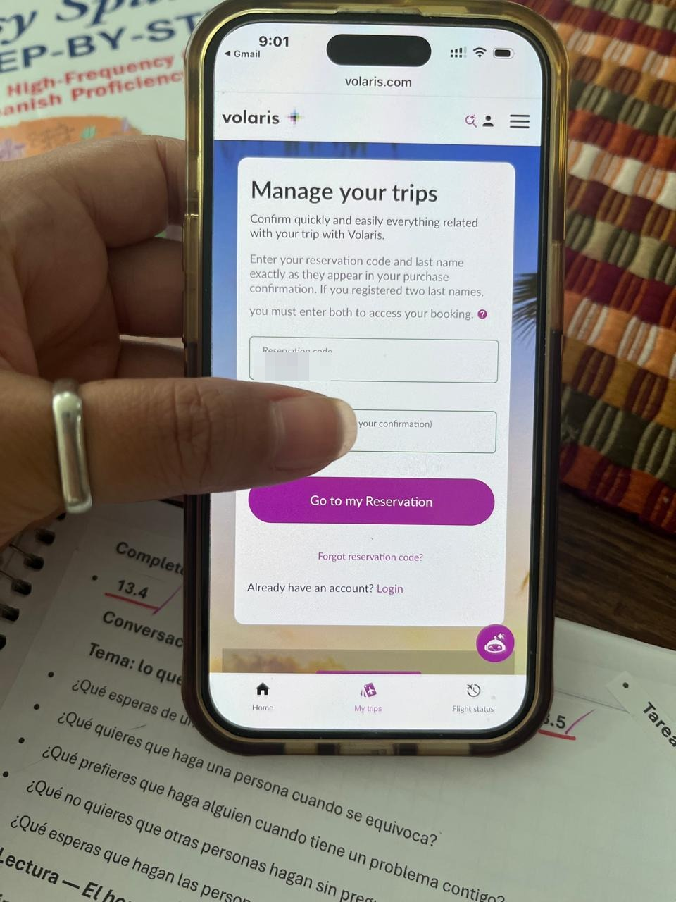
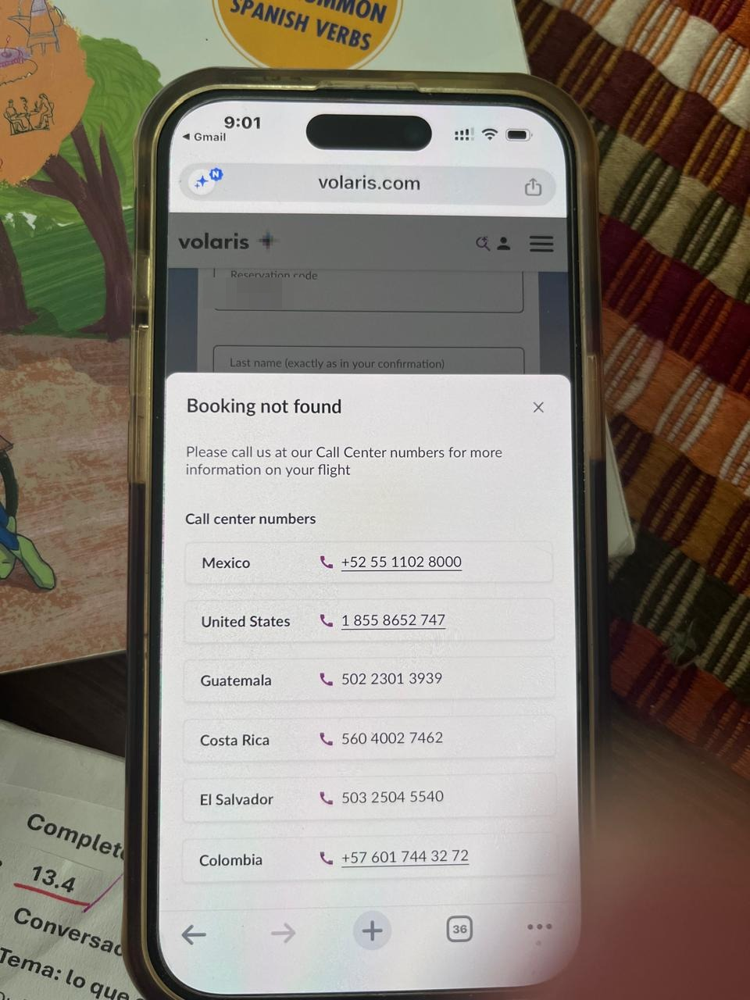

Objetivo
Que la persona sepa en todo momento en qué estado están su pago, su reserva y su boleto, y que nunca tenga que acudir a su banco para entender qué pasó con su compra.
Preguntas clave
- ¿Cómo distingue la persona entre "me cobraron", "tengo reserva" y "tengo boleto"?
- ¿Qué debe decir un error de pago cuando el banco ya aprobó el cargo?
- ¿Cómo debe verse una reserva que existe pero no está lista, o que se canceló?
- ¿Qué parte depende del diseño y cuál de sistemas internos entre agencia y aerolínea?
Plan de trabajo
- Exploración: entrevista por mensajes con la usuaria, revisión de sus capturas y sondeo informal.
- Diagnóstico: reconstrucción del recorrido y puntos donde se rompe.
- Propuesta: flujo rediseñado y arreglos priorizados por responsable.
- Prototipo: pantallas navegables de la agencia, la aerolínea y el correo.
- Prueba: 3 tareas con usuarios. En curso
Investigación
Entrevista con la usuaria
- Lleva años usando la app de Expedia en EE. UU. Meses antes compró vuelos de otra aerolínea mexicana en la misma app sin problemas.
- Compraba desde México un vuelo a EE. UU. con tarjeta estadounidense. Su banco aprobó el cargo.
- Escribió su nombre como aparece en su pasaporte. No cree que el apellido haya sido la causa.
- No volvió a intentar en Expedia porque la experiencia le pareció rara.
Evidencia



| Pantalla | Qué se observa |
|---|---|
| Checkout de Expedia | "No pudimos completar tu reserva. Espera un momento e intenta de nuevo." No dice si hubo cargo. Invita a reintentar cuando el banco ya aprobó el pago, con riesgo de cobro doble. |
| Mis viajes (Volaris) | Pide código y apellido. Con el código del correo de Volaris, la reserva no aparece. |
| Booking not found | No explica la causa ni distingue entre "no existe", "en proceso" o "cancelada". Solo muestra teléfonos de seis países. |
Los correos de Volaris no se conservaron. Según la usuaria, el primero mostraba código y monto pagado; el segundo, monto $0.00, sin mencionar cancelación.
Recorrido real
- Paga 3 boletos en la app de Expedia.
- Expedia muestra "No pudimos completar tu reserva, intenta de nuevo". Al mismo tiempo, su banco le avisa que el cargo está aprobado.
- Le llega un correo de Volaris con código y monto.
- Busca el código en volaris.com: "Booking not found" y una lista de teléfonos.
- Primera llamada: le dicen que la reserva no existe.
- Disputa el cargo con su banco. Recibe el reembolso en 2 a 3 días.
- Le llega otro correo de Volaris con monto $0, sin ninguna explicación.
- Segunda llamada: un agente le explica que ese correo era la cancelación.
- Compra directo en volaris.com con PayPal, sin problemas.
Hallazgos
- 1. El error de pago contradice al banco.Expedia dice que no se completó y pide reintentar; el banco dice que el cargo está aprobado. La persona no sabe a quién creerle y corre el riesgo de pagar dos veces.
- 2. Un código que no lleva a ningún lado.Volaris envió un código que no funcionaba ni en su sitio ni con su propio agente.
- 3. "No encontrada" no es un estado útil.La reserva estaba en algún punto intermedio, pero el sitio y el soporte solo podían decir que no existía.
- 4. La cancelación llegó como un monto, no como un mensaje.El correo de $0 apareció después de la disputa bancaria y no decía "cancelada".
- 5. La usuaria resolvió sola lo que el sistema no explicó.Recuperó su dinero por medio de su banco y supo qué había pasado hasta la segunda llamada.
Lo que no sabemos (hipótesis)
| Hipótesis | Qué la confirmaría |
|---|---|
| La reserva se creó en Volaris, pero el boleto nunca se emitió | Registros de emisión |
| El pago quedó retenido entre agencia y aerolínea (por ejemplo, revisión antifraude) | Registros de pago de Expedia |
| La cancelación fue consecuencia de la disputa bancaria | Fecha y hora exactas de la cancelación |
No confirmé ninguna. El caso no depende de la causa técnica: en todos los escenarios, la persona debió recibir un estado claro.
Qué le costó a cada parte
- La usuaria: días sin su dinero, dos llamadas, una disputa bancaria y la desconfianza de volver a usar la agencia para esa aerolínea.
- Expedia: perdió una venta de 3 boletos y la confianza de una clienta de años para este tipo de compra.
- Volaris: al menos dos llamadas de soporte, una cancelación y un reembolso. Recuperó la venta solo porque la clienta insistió y compró directo.
Sondeo informal
Pregunté a compañeros dónde buscan y compran vuelos. Algunos compran directo en la aerolínea; otros comparan en Skyscanner (el más mencionado), Google Flights o agencias en línea. Cuando una compra falla, es fácil irse a otra opción.
Propuesta
Cada estado de la compra tiene un mensaje y un siguiente paso, tanto en la agencia como en la aerolínea.
En la agencia, al pagar
En Mis viajes de la aerolínea
Arreglos priorizados
| # | Responsable | Arreglo | Impacto | Esfuerzo |
|---|---|---|---|---|
| 1 | Agencia | Error de pago que reconoce el posible cargo y pide no reintentar | Alto | Bajo |
| 2 | Aerolínea | Correo de cancelación explícito: estado, motivo, reembolso y siguiente paso | Alto | Bajo |
| 3 | Aerolínea | Error útil con causas probables (incluye "compraste por agencia") y chat | Medio | Bajo |
| 4 | Agencia | Pantalla de estado con pasos: pago, reserva con aerolínea, boleto | Alto | Medio |
| 5 | Agencia | Aviso proactivo y liberación del cargo si la reserva no se confirma | Alto | Medio |
| 6 | Aerolínea | Estados distintos en Mis viajes: en proceso por agencia, cancelada, no encontrada | Alto | Medio |
| 7 | Soporte | Que el agente vea reservas de agencia en proceso y tenga un guion para "cargo sin reserva" | Alto | Alto |
Primero, los arreglos 1 a 3: son cambios de contenido sobre pantallas y correos que ya existen. Del 4 al 7 requieren coordinar sistemas entre agencia y aerolínea, pero son los que evitan que la persona termine en su banco.
Prototipo navegable
9 pantallas con marcas genéricas que recorren los tres puntos de contacto:
- Agencia: pago en verificación y estado de la compra.
- Aerolínea: con el código AGE123 ves una reserva en proceso por agencia; con CAN123, una cancelada; con un solo apellido, el error útil.
- Correo: cancelación explícita comparada con el correo de $0.
Siguientes pasos
El caso está publicado con lo trabajado hasta hoy. Falta validar la propuesta con usuarios para completar los resultados con métricas.
- ✓Investigación, hallazgos y propuesta
Recorrido real, 5 hallazgos, flujo rediseñado y 7 arreglos priorizados. - ✓Prototipo navegable
9 pantallas de agencia, aerolínea y correo. - …Prueba de usabilidad en Useberry
3 tareas. Mediré tasa de éxito, tiempo y clics por tarea, más una calificación de confianza del 1 al 5. - 4Resultados y ajustes
Actualizar esta página con las métricas, frases de los participantes y los cambios al prototipo.
Plan de prueba
| Tarea | Instrucción | Éxito |
|---|---|---|
| 1 | Compraste 3 boletos en una app de viajes. Al pagar ves esta pantalla y tu banco te avisa de un cargo. ¿Qué harías? | No reintenta la compra; revisa el estado o espera el correo |
| 2 | Te llegó un correo de la aerolínea con el código AGE123. Tu apellido es García López. Revisa tu reserva. | Entiende que su reserva existe y está en proceso, sin llamar |
| 3 | Recibiste este correo. Explica qué pasó y qué pasará con tu dinero. | Dice que se canceló, por qué y quién gestiona el reembolso |
Al final: del 1 al 5, ¿qué tan seguro te sentirías de que tu dinero y tu viaje están a salvo?
Lo que aprendí hasta ahora
- Cuando una compra pasa por dos empresas, la persona no ve la frontera entre ellas. Ve un solo servicio que le cobró y no le dio nada.
- Un mensaje de error y un correo son parte del diseño. Aquí, un "intenta de nuevo" y un "$0.00" bastaron para perder la confianza.
- La disputa bancaria fue el único canal que funcionó. El problema no fue solo técnico, también de comunicación.
Con más tiempo: recuperar los correos originales, entrevistar a más personas con cargos sin reserva y llevar el prototipo a alta fidelidad.